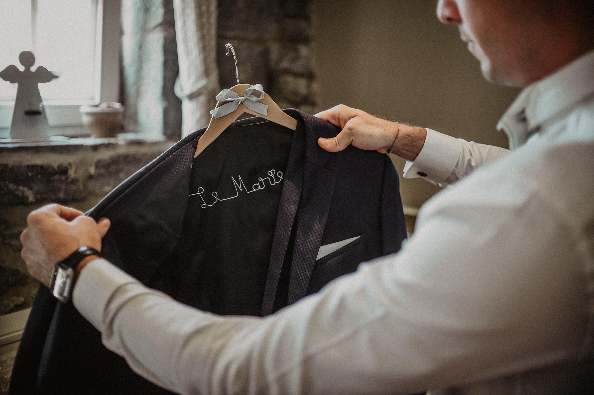
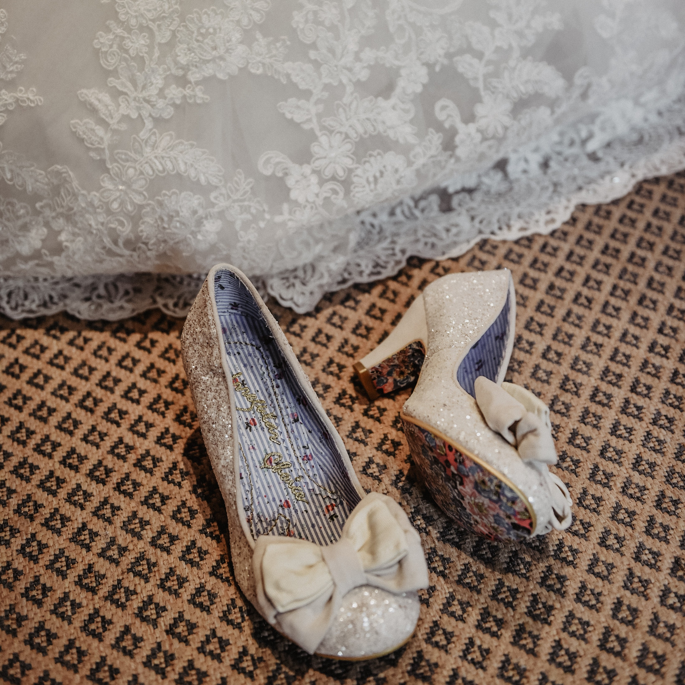

Organisation de Mariage
Créons ensemble le premier chapitre de votre plus belle histoire.

De l'idée originale au jour J
Parce que votre mariage doit être à votre image, nous vous accompagnons pas à pas dans toutes les étapes de sa création. De la recherche du lieu idéal en Belgique à la sélection rigoureuse de prestataires passionnés (traiteur, photographe, designer floral), nous gérons l'intégralité des préparatifs.
Nous concevons une scénographie unique et gérons le budget de manière transparente pour vous éviter tout stress de planification.
Une coordination millimétrée
Le jour J, détendez-vous et vivez pleinement votre bonheur. Notre équipe est présente dès les premiers préparatifs du matin jusqu'à l'ouverture du bal pour orchestrer l'ensemble des prestataires et veiller au respect du planning.
Nous accueillons vos invités, gérons les surprises de vos proches et solutionnons les moindres imprévus en toute discrétion. Devenez les invités d'honneur de votre propre mariage.
Discutons de votre mariage